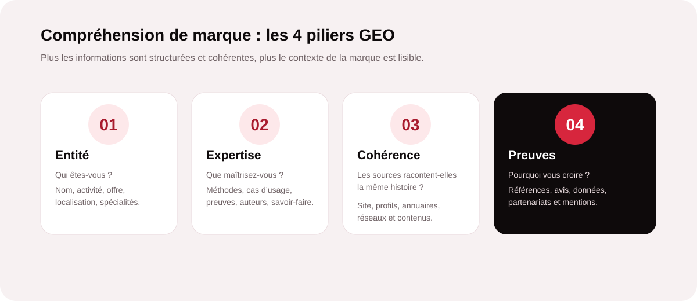
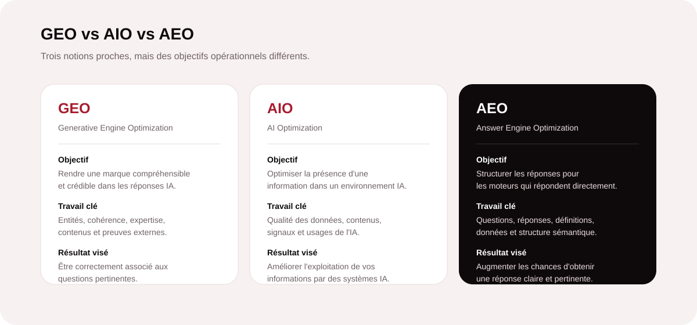
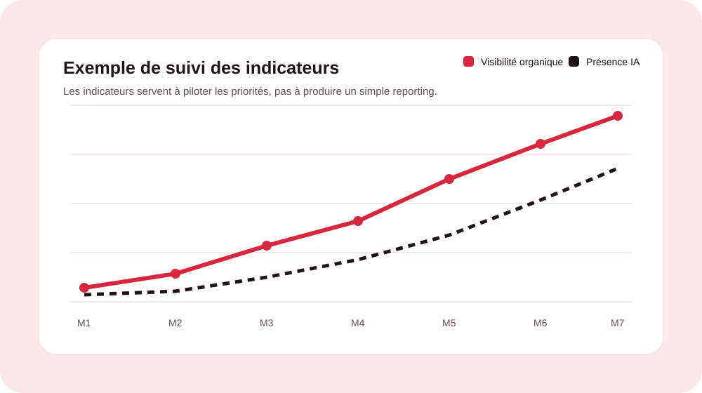

Pourquoi le GEO commence par la compréhension de la marque
Le GEO (Generative Engine Optimization) désigne l’ensemble des pratiques qui visent à améliorer la compréhension et la visibilité d’une marque dans les environnements où l’utilisateur obtient une réponse générée par l’IA. L’enjeu n’est pas de « manipuler » une intelligence artificielle, mais de lui fournir un écosystème d’informations suffisamment clair pour qu’elle puisse identifier les bons sujets, les bonnes entités et les bonnes relations.
Une marque peut proposer une excellente offre tout en restant difficile à comprendre si son site, ses profils et ses mentions externes utilisent des descriptions différentes. À l’inverse, une présence structurée permet de relier plus facilement qui vous êtes, ce que vous faites, pour qui, dans quelle zone géographique et avec quelle expertise.

Quelles informations une marque doit-elle rendre faciles à comprendre ?
Le premier travail consiste à identifier les informations essentielles qu’un prospect, un moteur de recherche ou un système d’IA doit pouvoir retrouver sans ambiguïté. Plus ces informations sont stables et répétées de façon cohérente sur des sources pertinentes, plus le contexte de la marque est solide.
| Information | À clarifier | Intérêt GEO |
|---|---|---|
| Identité | Nom, activité, localisation, site officiel, catégorie. | Évite les ambiguïtés et facilite l’association à la bonne entité. |
| Expertise | Métiers, spécialités, méthodes, secteurs et sujets traités. | Permet de relier la marque aux questions pertinentes. |
| Offres | Services, produits, publics concernés, bénéfices et périmètre. | Rend la proposition de valeur compréhensible. |
| Preuves | Références, données, avis, certifications, partenaires, réalisations. | Renforce la crédibilité et le contexte disponible. |
| Informations pratiques | Contact, zones desservies, horaires, modalités, tarifs si pertinents. | Répond aux requêtes à forte intention et réduit l’incertitude. |
1. Construire une entité de marque claire
Une entité correspond ici à une marque ou une organisation identifiable et distincte. Le site doit rapidement permettre de répondre à des questions simples : qui est l’entreprise ? où intervient-elle ? quels services propose-t-elle ? pour quels clients ? Les pages « À propos », « Services », « Contact » et les mentions externes doivent utiliser des formulations compatibles, sans multiplier les appellations contradictoires.
2. Démontrer l’expertise plutôt que l’affirmer
Dire « nous sommes experts » apporte peu d’information sans éléments concrets. Pour le GEO, il est préférable de publier des contenus qui expliquent les méthodes, les étapes, les critères de décision, les cas d’usage et les résultats observables. Des auteurs identifiés, des données sourcées, des exemples et des références renforcent également le contexte éditorial.
3. Maintenir une cohérence sur toutes les sources
Une information importante ne devrait pas changer de nature selon la page consultée. Nom de marque, spécialités, description des services, localisation, coordonnées et positionnement doivent rester cohérents entre le site, les profils professionnels, les annuaires pertinents, les réseaux sociaux et les publications tierces. Le GEO repose donc aussi sur un travail de cohérence éditoriale et de réputation numérique.
4. Apporter des preuves et du contexte
Une IA peut synthétiser une information, mais la qualité de cette synthèse dépend du contexte disponible. Les preuves peuvent prendre différentes formes : chiffres documentés, références clients, publications spécialisées, partenariats, certifications, avis authentiques ou citations dans des médias et sites reconnus. L’objectif n’est pas d’accumuler des mentions, mais de construire un environnement informationnel crédible.
Votre marque est-elle correctement comprise en ligne ?
MinoSeo peut analyser vos pages, vos entités, votre cohérence éditoriale et vos signaux de confiance afin d’identifier les informations à clarifier en priorité.
Demander un audit GEOGEO vs AIO vs AEO : comprendre les différences clés
Ces trois acronymes sont souvent employés comme des synonymes, alors qu’ils mettent l’accent sur des dimensions différentes. Les frontières peuvent varier selon les professionnels, mais une distinction pratique permet de mieux structurer une stratégie.

GEO met l’accent sur la visibilité d’une marque ou d’un contenu dans les réponses générées. AEO (Answer Engine Optimization) vise plus spécifiquement à structurer les informations pour répondre efficacement aux questions posées à des moteurs de réponse. AIO (AI Optimization) est une notion plus large, qui peut englober l’optimisation des informations et des contenus pour différents usages de l’intelligence artificielle. Dans la pratique, une stratégie GEO sérieuse s’appuie sur plusieurs de ces leviers.
Quels contenus facilitent la compréhension par l’IA ?
Les contenus les plus utiles sont ceux qui répondent précisément à une intention. Guides, pages de services, comparatifs, définitions, FAQ, études de cas et articles experts peuvent tous jouer un rôle. Une bonne page commence par une réponse claire, développe le contexte, précise les limites et donne des éléments vérifiables.
- Définitions : expliquer les termes métier avec un vocabulaire accessible.
- Questions-réponses : traiter les objections et requêtes formulées naturellement.
- Comparatifs : distinguer les solutions avec des critères explicites.
- Preuves : documenter les chiffres, références, méthodes et résultats.
- Pages d’expertise : approfondir les sujets sur lesquels la marque veut être identifiée.
La méthode GEO de MinoSeo
MinoSeo aborde le GEO comme un travail de clarification, structuration et renforcement de la présence numérique. L’objectif est de transformer une marque parfois dispersée en un ensemble d’informations plus lisibles et cohérentes.
- Cartographier les entités, offres, expertises, audiences et zones géographiques.
- Auditer les sources existantes : site, contenus, profils, mentions et informations pratiques.
- Identifier les contradictions, informations manquantes et sujets stratégiques.
- Optimiser les pages clés, la structure sémantique et les contenus d’expertise.
- Renforcer les preuves et la cohérence externe avec une stratégie éditoriale et d’autorité.
- Mesurer la présence de la marque sur les requêtes et scénarios IA prioritaires.

Les erreurs qui fragilisent la visibilité GEO
La première erreur est de publier beaucoup sans clarifier les fondamentaux. Une marque peut produire des dizaines d’articles tout en restant ambiguë sur son activité ou ses spécialités. Autre erreur : modifier régulièrement la description de l’entreprise selon les supports, ce qui peut créer un contexte fragmenté. Enfin, les contenus génériques, les affirmations non étayées et les preuves difficiles à vérifier réduisent la valeur informative de la présence en ligne.
GEO : rendre votre marque évidente, cohérente et crédible
Le GEO ne consiste pas à chercher une formule magique pour « plaire à l’IA ». Il s’agit surtout de rendre une marque facile à identifier, à comprendre, à relier à ses expertises et à crédibiliser. Une stratégie efficace commence donc par les informations fondamentales : entité, offres, expertise, localisation, preuves et cohérence entre les sources.
Pour une entreprise qui souhaite développer sa visibilité dans les nouveaux parcours de recherche, ce travail constitue un actif durable. MinoSeo peut vous accompagner dans l’audit, la structuration des informations, la création de contenus et le renforcement des signaux de confiance qui soutiennent votre visibilité GEO.
Votre marque est-elle prête pour les nouveaux moteurs de réponse ?
Faites analyser vos informations clés et identifiez les priorités GEO à traiter pour rendre votre expertise plus visible et plus compréhensible.
Parler de votre visibilité GEO